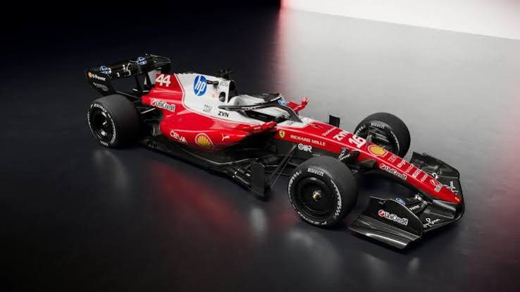

Ferrari SF-26
Regulamento e Especificações
Motor V6 turbo híbrido de 1.6 L, com potência elétrica de até 350 kW e combustível sustentável. Chassi de fibra de carbono, câmbio de 8 marchas, peso mínimo de aproximadamente 770 kg e tração traseira. Regulamento 2026: aerodinâmica ativa, maior participação elétrica, redução de downforce e novo sistema de ultrapassagem.
Estatísticas
- 21 corridas
- 2º lugar no campeonato de construtores
- 517 pontos
- 2 vitórias
- 13 pódios
- 1 pole position